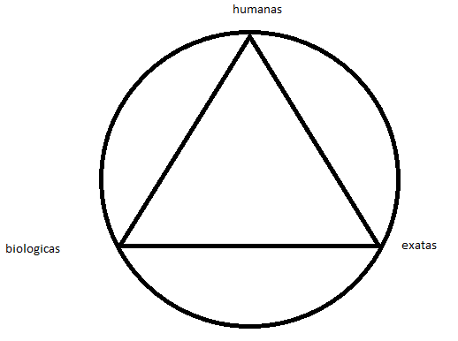

Progresso

a imagem acima é simplesmente um exemplo do que podemos mostrar aos alunos de quais partes das matérias de um modo mais geral eles estão melhores
mas como isso funcionaria ?
ora isso é trivial:
tudo o que precisa ser feito é classificar as questões que os alunos respondem pelo simulado de acordo com essas areas e então salva-las em um bd e puchar essas infos
depois disso, ainda sim podemos fornecer por exemplo um relatorio mais detalhado ainda, com as informações de questões acertadas em cada disciplina pelo aluno nos simulados
Voltar